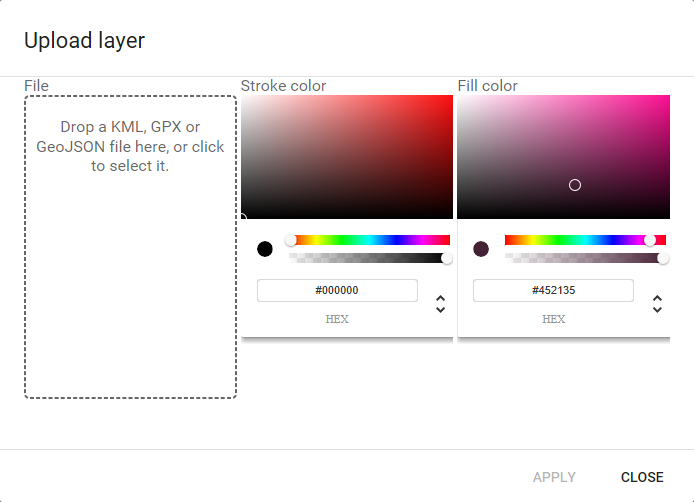

The "Add layer" button allows to add a new layer to the map.
The following dialog is shown to select the file to load and the color to use for rendering its features in the map.
Supported formats are GeoJson, GPX and KML. The layer will be added to the map and can be used as any other layer